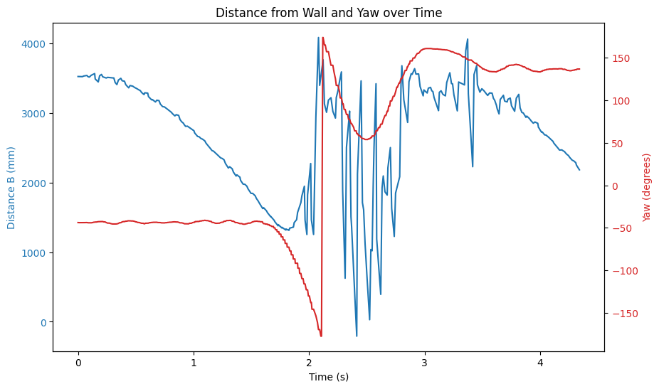
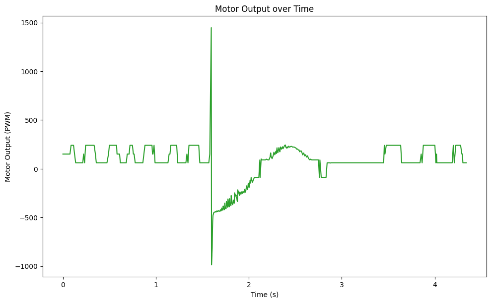

Fast Robots: Lab 8

Arduino IDE • Bluetooth • Jupyter Notebooks • PID
• Kalman FilterStunts!
This lab is about doing a stunt. In this case, we are going to be doing a drift.
Arduino IDE • Bluetooth • Jupyter Notebooks • PID
• Kalman FilterThis lab is about doing a stunt. In this case, we are going to be doing a drift.
During the course of this lab, my car (previously named Puyo) has been unfortunately relocated to a landfill. Thus, I had to use a previous year's car (henceforth named Puyo Puyo) for this lab. Becuase of this, I had to redo the PID tunings and retest the Kalman filter implementation on the new car. I tuned the angle PID loop with the final parameters of \(K_p = 2.5\), \(K_i = 0\), and \(K_d = 0.2\), which resulted in a very stable loop that was able to keep the car at a set angle with a maximum error of 0.1 degrees on the smooth surface of Tang Hall's floor. For the distance PID loop, I tuned it with the final parameters of \(K_p = 0.065\), \(K_i = 0.001\), and \(K_d = 0.04\), which resulted in a loop that was able to keep the car at a set distance with a maximum error of about 10 mm, which is pretty good considering the noise in the ToF sensor measurements. I also retested the Kalman filter implementation on the new car, and it was able to accurately predict the position of the car without any modifications. Below is a plot of the Kalman filter predictions compared to the raw measurements to show that it is working correctly.

I attempted to do a flip, which consists of driving fast, breaking, flipping over, and driving backwards, with Puyo, and was fortunate that it was able to get one semi-successful trial. The car was able to move towards the wall and flip, but it drove at an angle outwards. This led me to add a PID loop for the angle of the car to try to keep it straight during the flip, which helped, but I was unable to get a perfectly straight flip before Spring Break, and before Puyo's retirement to a garbage dump. During most of the trials, the car was unable to do a flip, which could be due to the car not going fast enough since I was only running it at 200 PWM towards the wall, or because the battery was dying since the number of successful flips decreased as I did more trials. Below is a video of the semi-successful flip as well was my code for the flip attempt. I used linearly extrapolated distance measurements since I had not yet implemented the Kalman filter, and I wanted faster measurements compared to the slower raw ToF readings. I later gave up on the flip attempt since I didn't have a sticky mat to do the flip on to give the bot more traction.
// ram into the wall
moveForwards(ramSpeed);
// wait until we are about a foot away from the wall
int prev_prev_distance = -1;
int prev_distance = -1;
int prev_meas_time = 0;
int prev_prev_meas_time = 0;
while (true)
{
get_DMP_data();
int distance = getDistance(sensorB);
if (distance != -1 && distance < flipDist)
{ // if we can read and we are within the flip distance,
break;
}
// linearly extrapolate distance if we can't read to prevent crashing into the wall, this is based on the assumption that we are approaching the wall at a constant speed which should be mostly true during the ram
// we can use the previous two distance readings to calculate the speed and then extrapolate the
int current_time = micros();
if (prev_distance == -1 || prev_prev_distance == -1)
{
// if we don't have two valid readings yet, just skip the extrapolation
prev_prev_distance = prev_distance;
prev_distance = distance;
prev_prev_meas_time = prev_meas_time;
prev_meas_time = current_time;
continue;
}
float slope = (prev_distance - prev_prev_distance) / (prev_meas_time - prev_prev_meas_time);
float dt = (current_time - prev_meas_time);
int extrapolated_distance = prev_distance + slope * dt;
if (extrapolated_distance < flipDist)
{
break;
}
prev_prev_distance = prev_distance;
prev_distance = distance;
prev_prev_meas_time = prev_meas_time;
prev_meas_time = current_time;
delay(3); // delay to prevent overwhelming the sensor/give time for ble events
}
// reverse at a high speed for a short amount of time to do the flip
// Serial.println("Flipping...");
moveBackwards(255);
delay(flipTime); // delay for flip
breakMotors();
// move backwards for a short amount of time to get away from the wall
// Serial.println("Moving away from the wall...");
moveBackwards(backSpeed);
delay(backTime);
stopMotors();
sendFlipData();
I switched to drifting, which consists of driving fast, spinning the car around to face the opposite direction, and then driving away. I needed to add a lot of angle control to get the car to do a clean drift, which consisted of a PID loop to control the angle during the drift, but also a pre-emptive angle control while it went towards the wall since sometimes the car would suddenly veer to one side during the ram, which would cause it to hit the wall at an angle and mess up the drift. The main challenge was finding the right distance and speed to drive the car and initiate the drift at to make it not hit the wall. I ended up driving the car at 150 PWM towards the wall. Below are three successful attempts at drifting, as well as the code for the drift attempt.
void DRIFT(float setpoint, float angle_threshold = 2.5)
{
// move fowrards at a high speed (150) until we're within 3ft (914.4 mm) of the wall,
// then turn around using rotate pid 180 degrees
// then move backwards at a high speed (150) until we're more than 3ft from the wall again, then stop
int distanceB = -1;
int extrapolated_distanceB = -1;
float kalman_filtered_distanceB = -1;
double currYaw = yaw;
driveCombined(150, 0);
pid_rotate.reset();
pid_rotate.setSetpoint(currYaw);
while (extrapolated_distanceB > setpoint || extrapolated_distanceB == -1)
{
get_DMP_data();
int rotate_output = pid_rotate.compute(yaw);
driveCombined(150, rotate_output);
distanceB = getDistance(sensorB);
extrapolated_distanceB = distanceB;
kalman_filtered_distanceB = distanceB;
if (distanceB == -1) { // only compute if we have a valid distance reading
extrapolated_distanceB = predictDistance();
kalman_filtered_distanceB = kalmanFilter.step(0, distanceB);
}
}
double targetYaw = currYaw + 180;
// wrap target yaw to [-180, 180]
if (targetYaw > 180) {
targetYaw -= 360;
} else if (targetYaw < -180) {
targetYaw += 360;
}
pid_rotate.reset();
pid_rotate.setSetpoint(targetYaw);
while (abs(pid_rotate.setpoint - yaw) > angle_threshold)
{
get_DMP_data();
int rotate_output = pid_rotate.compute(yaw);
driveCombined(0, rotate_output);
distanceB = getDistance(sensorB);
extrapolated_distanceB = distanceB;
kalman_filtered_distanceB = distanceB;
if (distanceB == -1) { // only compute if we have a valid distance reading
extrapolated_distanceB = predictDistance();
kalman_filtered_distanceB = kalmanFilter.step(0, distanceB);
}
}
// drive the next 2 seconds to make sure we are fully turned around
int start_time = millis();
while (millis() - start_time < 2000)
{
get_DMP_data();
int rotate_output = pid_rotate.compute(yaw);
driveCombined(150, rotate_output);
distanceB = getDistance(sensorB);
extrapolated_distanceB = distanceB;
kalman_filtered_distanceB = distanceB;
if (distanceB == -1) { // only compute if we have a valid distance reading
extrapolated_distanceB = predictDistance();
kalman_filtered_distanceB = kalmanFilter.step(0, distanceB);
}
}
}
Trial 1
Trial 2
Trial 3
Below are the plots of the angle and distance measurements during the drift, and the motor output of the right motor, which show that the car was able to maintain a stable angle during the drift.


In place of a Blooper Video I have a funeral video of Puyo. ==========> SEIZURE WARNING <============
I used Lucca Correial's website as a reference for the report. I also was offered Ananya Jajodia's and Tina Cheng's car as a replacement for my car after it was thrown out. Thanks!
Copyrights © 2019. Designed & Developed by Themefisher